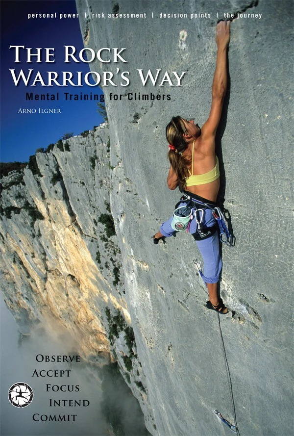

How structured mental training helped me to overcome my fears
EventNetlight Edge 2026
FormatTalk & Q&A
TrackPersonal Growth
The science of fear
"Fear is a universal emotion — biologically based, recognized across all human cultures.
We all feel it. We just express it differently depending on culture, context or gender."
Apprehension
Worry
Dread
Terror
Inspired by Atlas of Emotions · atlasofemotions.org
It's not the emotion of fear that limits us —
but how we act on it.

The method
The framework
Step 0
Build strong domain competence
In order to manage the fear of falling you need to be able to judge when a
situation is dangerous or not. That's not always easy and requires some experience.
The framework
Step 1
Identify Power Leaks
Power leaks are energy-sapping elements of our personality and behaviors.
Self-importance
Self-image maintained by ego
Negative self-talk
Hoping and wishing behavior
Reacting defensively to unwanted events
Ineffective habits
The framework
Step 2
Delay your habitual response
Delay whatever you would normally do. Our habit is to escape discomfort — but
instead we're training to be OK with it.
The framework
Step 3
Dissociate from it
Do something — anything — differently. Instead of calling take, just do one
more move. Take a deep breath. The goal is to break the habitual cycle.
The framework
Step 4
Change your self-talk
Ask "How can I do the next move?" instead of "That move is way too far for
me." Questions open up challenges and invite solutions. Phrase self-talk positively. Don't label
anything as good or bad.
The framework
Step 5
Work on posture & breathing
Own the space you occupy. Your posture enhances the quality of your breathing
— open your chest, engage your core, relax your face. Breathing connects body and mind. It's how you
gain control in stressful situations.